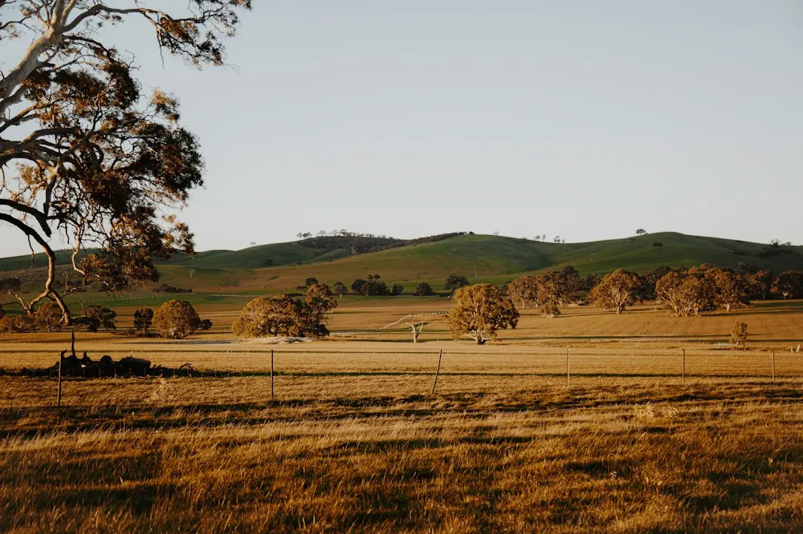

Rural earthworks on a Darling Downs property should be planned around the way the ground will be used. House, shed and tank pads involve slope, excavation, finished levels and soil placement. Driveways require attention to runoff and water crossings, while drainage excavation needs a workable water path. A useful enquiry explains the intended work, machinery access, soil movement, nearby conditions and which fencing, retaining or building tasks sit outside the excavation scope.
For property owners comparing rural earthworks darling downs options, the useful starting point is a written scope that connects the intended use of the ground with levels, access, soil movement and water.
Rural Earthworks Darling Downs Explained
Darling Downs Rural Earthworks presents rural excavation as a response to a particular property need, including a shed pad, driveway preparation or drainage excavation. That approach gives the enquiry a clear starting point. Uneven ground near a proposed building area calls for a different conversation from a track that repeatedly washes out.
State what the finished area must allow. A house or shed pad brings the building footprint, slope, finished levels and destination of moved soil into the scope. A tank pad also needs room for the footprint and delivery vehicles. An access route needs usable ground for vehicles and attention to how runoff reaches or crosses it. Drainage work needs a water path that does not shift pooling into another area.
These distinctions help keep excavation separate from later building or installation work. They also give the contractor enough context to consider the ground rather than pricing a vague request for dirt to be moved.
A worked decision for a washed out access track
Consider an acreage owner whose driveway becomes difficult to use after runoff crosses the track. The visible request might be to reshape the surface. The more useful enquiry asks how water approaches the access route, where it crosses, and whether the proposed digging changes the surrounding levels.
That scenario can lead to a clearer scope with three visible parts: the track area requiring preparation, the water movement affecting it, and the soil movement or finishing work included. If a delivery route is also needed for a future shed, that vehicle requirement belongs in the same discussion, but the shed pad should remain a separately identified task.
The comparison is practical:
| Surface-only request | Ground-use request |
|---|---|
| Reshape the track | Prepare access while considering runoff and water crossings |
| Unclear soil destination | Ask where moved soil goes and whether spreading is included |
| Future work assumed | List any shed pad, drainage, fencing or retaining work separately |
This example does not determine the design for a particular property. It shows the document to examine before accepting a scope: the access area, water movement, soil handling and excluded tasks should be visible rather than implied.
Keep different ground tasks distinct
House site excavation and levelling focus on the building area, slope and finished levels. Shed and tank pads focus on a level footprint, supporting ground and the room needed for delivery vehicles. Driveways and access roads bring vehicle movement and runoff into the assessment.
Drainage excavation and service trenches need workable water paths, digging access and clear edges. Dam construction is a separate project involving the basin, embankment and overflow suited to the ground and intended water needs. Land clearing may involve targeted tree removal, mulching or slashing, but it should not be assumed to form part of pad preparation.
Fencing, retaining walls and construction also need clear allocation. A quote can discuss several activities together, but each task should be identifiable as included, excluded or assigned to another appropriately licensed specialist where regulated building or installation work is involved.
Build one usable first enquiry
A concise first enquiry can give the contractor the information needed to assess the job without turning every rural property into the same project. Use a property-specific note such as:
Property location: [suburb or postcode]. Planned use: [house pad, shed pad, tank pad, driveway, drainage, dam or clearing]. Ground issue: [uneven area, washout, pooling or overgrown ground]. Access: [gate openings, machinery route and delivery space]. Water: [where runoff reaches, crosses or pools]. Soil: [known place for moved soil, if any]. Separate work: [fencing, retaining, building or installation tasks to confirm].
Attach or describe the area that needs attention and explain what the property must support after the work. The published enquiry process asks for the work required and the property location, with access and nearby conditions included where they affect the job. This produces a more useful starting brief than a general request for earthmoving.
Who this guide applies to
This guide is for owners and project planners across the Darling Downs dealing with uneven ground, repeated access washouts, pooling water, a planned house or shed area, a tank footprint, a dam or overgrown rural ground. The published locations include Dalby, Cecil Plains, Maclagan, Jondaryan, Mount Tyson, Oakey, Millmerran, Cooyar, Goombungee, Pittsworth, Kingsthorpe, Meringandan, Highfields, Toowoomba and Crows Nest.
Locality alone does not decide the excavation. A property near Dalby may need a different scope from one near Toowoomba because the intended use, ground levels, access route and water movement differ. Describe the actual site condition and proposed use when requesting an assessment.
For further reading, the earthworks planning resource can sit alongside the project-specific scope.
- Name the finished use. State whether the ground is intended for a house, shed, tank, driveway, drainage route, dam or cleared area.
- Describe the site constraint. Note uneven ground, washouts, pooling, overgrowth, gates, machinery routes and delivery space.
- Explain water movement. Identify where runoff reaches or crosses the work area and where pooling occurs.
- Confirm the boundaries. Ask which excavation, soil movement and finishing tasks are included, and which building, fencing or retaining tasks sit elsewhere.
| Project focus | Question to resolve | Detail to identify |
|---|---|---|
| House, shed or tank pad | What footprint and finished level are required? | Slope, excavation, soil destination and vehicle access |
| Driveway or access road | How does water reach or cross the track? | Track area, runoff route, crossings and finishing work |
| Drainage or trenching | Where must water or services travel? | Ground levels, route, digging access and clear edges |
| Dam or clearing | What separate rural use is planned? | Basin and overflow, or the clearing method and target area |
Common questions
When can professional earthworks help on a Darling Downs property? They can help when uneven ground, repeated driveway washouts or pooling water prevent the property being used as planned. An assessment considers levels, soil and machinery access before the digging scope is settled.
Does an earthworks quote include the whole building project? Not by default. A quote covers the work listed in its scope, so pad excavation, driveway preparation, fencing, retaining walls and construction should be identified separately.
What should an initial rural earthworks enquiry include? Include the property location, intended use, ground issue, access route, nearby conditions, water movement and any known soil destination. Also ask which separate tasks are included or excluded.
Are clearing and dam excavation the same as pad preparation? No. Clearing overgrown ground and excavating a dam are separate project options from preparing a house, shed or tank pad. Each needs its own description of the planned use and ground conditions.
This guide covers rural ground preparation, pads, access, drainage, clearing and quote scope across the Darling Downs.